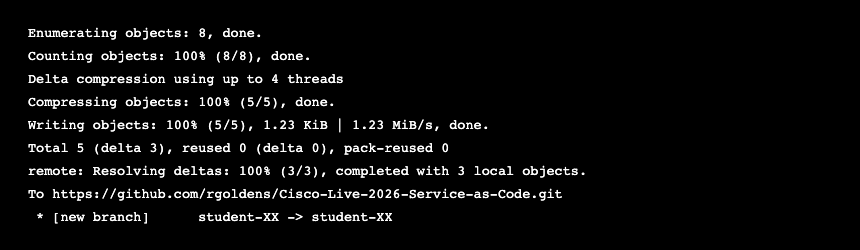

Task 6: Push Your Completed Work to GitHub¶
Objective¶
Save your completed lab work by committing your changes and pushing them to GitHub on your student branch. This is the final step in the Infrastructure as Code workflow — your network configuration changes are now version-controlled and stored in a central repository.
New to Git? If you haven't read it already, the Git Primer explains the concepts behind the commands in this task.
What You Changed¶
Over the course of Tasks 1–5, you edited several files — filling in TODO placeholders with real values and deploying them to the network. Here's a summary of what you modified:
| File | What You Changed |
|---|---|
ce-access-vlan.yml |
Task 1 — VLAN IDs and names for n9k-ce01 and n9k-ce02 |
igp-pe-ce.yml |
Task 2 — IS-IS configuration for NX-OS and IOS-XE devices |
inter-as-option-a.yml |
Task 3 — BGP VPN, XRd config, and cross-routes |
task4-terraform/*.tf |
Task 4 — Terraform variables for IOS-XR via gNMI |
task5-terraform/*.tf |
Task 5 — Terraform variables for IOS-XE via RESTCONF |
Note: You may have modified additional files during the lab. The commands below will show you exactly what changed — Git tracks everything.
Step 1: Review Your Changes¶
Before committing, see what Git thinks has changed. Run:
This shows two categories:
- Modified files — files that existed in the repo and you edited (your playbooks and Terraform configs)
- Untracked files — new files created during the lab (like
terraform.tfstate) that Git hasn't seen before
Tip: Red filenames mean the file has changes that haven't been staged yet. After you run
git add, they turn green.
Step 2: Stage Your Changed Files¶
Tell Git which files to include in your commit. Stage all the playbooks and Terraform files you modified:
Why not
git add .(add everything)? In a real workflow, you should be deliberate about what you commit. Adding everything can accidentally include temporary files, state files with sensitive data, or other artifacts that don't belong in version control. Listing files explicitly is a good habit.
Verify what's staged:
You should see your files listed under "Changes to be committed" in green.
Step 3: Commit Your Changes¶
Create a commit — a snapshot of your staged changes with a message describing what you did:
What makes a good commit message? Describe what changed and why in one line. Future you (or your teammate) should be able to read the message and understand the change without opening the files.
Step 4: Push to GitHub¶
Upload your branch to the remote repository on GitHub:
Replace XX with your pod/seat number — the same branch name you created in
the Lab Access setup.
First push? Git may prompt you for credentials. Use the shared GitHub username and token provided by your proctor.
Expected output:

Step 5: Verify on GitHub¶
Open a browser and navigate to the repository:
https://github.com/rgoldens/Cisco-Live-2026-Service-as-Code
- Click the branch dropdown (it says
mainby default) - Find your branch (
student-XX) in the list - Click on it — you should see your modified files with the changes you made
You can click on any file to see the exact values you filled in. This is your completed lab work, stored permanently in version control.
Checkpoint¶
- [ ]
git statusshowed your modified files - [ ]
git addstaged the playbooks you changed - [ ]
git commitcreated a snapshot with a descriptive message - [ ]
git pushuploaded your branch to GitHub - [ ] Your branch is visible on GitHub with your changes
What You've Accomplished¶
By completing all tasks, you've automated the configuration of a full service provider network from the ground up — using two different tools and three different protocols:
| Layer | What You Built | Devices Configured | Task |
|---|---|---|---|
| L2 Switching | VLANs, access ports | 2 NX-OS switches | Task 1 |
| L3 Routing (IGP) | IS-IS adjacencies, SVIs, static routes | 2 NX-OS + 2 IOS-XE + 4 Linux | Task 2 |
| L3 VPN (BGP) | VRFs, iBGP VPNv4, eBGP, redistribution | 2 IOS-XR + 2 IOS-XE + 4 Linux | Task 3 |
| Terraform (gNMI) | Same XRd config via gNMI | 2 IOS-XR | Task 4 |
| Terraform (RESTCONF) | IOS-XE config via RESTCONF + Docker infra | 1 IOS-XE + 2 Linux | Task 5 |
| Version Control | Commit and push completed work to GitHub | — | Task 6 |
| Verification | Automated show commands and ping tests | All 10 devices | Every task |
By the numbers: - 10+ devices managed from a single control node - 4 different platforms (NX-OS, IOS-XE, IOS-XR, Linux) with 3 different connection methods (network_cli with keys, network_cli with password, raw SSH) - 2 IaC tools (Ansible + Terraform) compared side-by-side on the same configuration, plus a second Terraform lab using RESTCONF - ~32 configuration values you filled in by hand, referencing topology diagrams and IP tables — just like real network planning - 3 Ansible playbooks + 2 Terraform configs — replacing what would be hundreds of manual CLI commands across a dozen SSH sessions - 0 manual device logins — everything was done through automation - Version-controlled workflow — your changes are committed and pushed to Git, just like a production IaC pipeline
Key Takeaways¶
-
Separation of data and logic — Variables hold the "what" (IPs, VLANs, AS numbers), tasks hold the "how" (which module, which CLI commands). In production, you'd move the variables into separate files (group_vars, host_vars) so different teams can manage data and logic independently.
-
Multi-vendor orchestration — One playbook can configure NX-OS, IOS-XE, IOS-XR, and Linux in sequence. Ansible handles the platform differences through collections (
cisco.nxos,cisco.ios,cisco.iosxr). You write one workflow; the collections translate it to each vendor's CLI. -
Idempotency — Well-written playbooks are safe to run repeatedly. This is essential for CI/CD pipelines and production automation. You can schedule them to run hourly to catch config drift, or trigger them on git commits.
-
Verification as code — Every playbook includes verification and testing plays. Never assume config was applied correctly — automate the
showcommands and ping tests too. In production, these verification plays can trigger rollbacks if expected state isn't met. -
Infrastructure as Code (IaC) — Everything you did today is stored in YAML and HCL files that can be version-controlled with Git, reviewed in pull requests, tested in CI pipelines, and audited for compliance. No more mystery changes — every change is documented in code.
-
Right tool for the job — Ansible and Terraform both automate network configuration, but they approach it differently. Ansible excels at multi-vendor orchestration and day-2 operations (compliance, patching, ad-hoc commands). Terraform excels at provisioning, state tracking, and clean lifecycle management (plan, apply, destroy). Most teams use both.
Automation Insight: Everything you built today is in version-controllable YAML and HCL files — and you pushed them to a Git repository in Task 6. In a production workflow, someone opens a pull request to change a VLAN ID, a teammate reviews it, CI runs the playbook in a test environment, and only then does it hit production. No more mystery changes — every change has an author, a timestamp, and a review trail.
Congratulations — you've completed the lab!